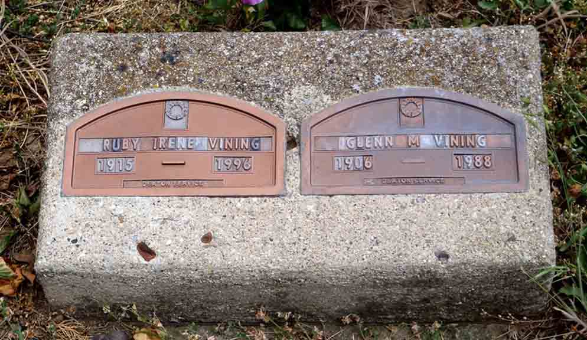

Documentation for Glenn Minor Vining - (1) Mabel Shumaker; (2) Mary Lotimore; (3) Ruby Samules
Death Data
Headstone for Glenn Minor Vining and Ruby (Samules) Vining, in Etna Green Cemetery, Etna Green, Kosciusko County, Indiana (from Find A Grave):
